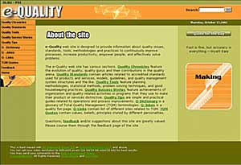

| The
Start of the Year for PRIO
By Janet
Chua
After the much enjoyed Christmas break, everyone came back
to the office excited to exchange stories about the holidays
spent with family, friends and loved ones. Everyone has a
new set of goals, a new set of dreams, a new set of hopes.
This also
applied to PRIO. So that the group can work towards a common
goal, the unit kicked the year off with planning workshop
sessions. We reviewed the existing mission-vision statements
and objectives, the regular activities and the services offered.
We also set the indicators so we will know if we measure up
to our standards.
The existing
and incoming projects such as the Research Management Project,
the development of the e-Quality site and the preparation
of training modules were also discussed.
Because
the members of the group missed each other’s company,
PRIO had a good old-fashioned bonding activity… dining
out. We had good laughs, funny stories and good food. It would
have been perfect if the food we ordered was served after
a reasonable time instead of after an hour.
It was
a good thing PRIO is a fun group. This will be another story
we can look back on fondly as we work to achieve our objectives.
E-quality
Website's New Page
by: Patricia
b. Antonio
The
E-quality website has a new page! It is the People, School,
& Community Page. This page includes the Mission-Vision
of De La Salle University. It also includes a description
of Our People, Our School, and Our Community.
The
above sections of the website aim to increase the knowledge
and understanding of the reader on the quality efforts of
the University.
Our
People ---features Faculty, Staff, and Student’s achievements,
development, and awards. It provides information on Student
organizations, activities, and projects. It also includes
activities of Board of Trustees, Parents and Alumni.
Our
School --- Includes curricula of the different colleges, academic
support and services, higher education requirements, information
on health, safety and environment, infrastructure, and IT
initiatives/updates.
Our
Community --- Includes community services, activities of affiliate,
parents, and trustees and information on national and international
linkages.
The
content of the above quality efforts mentioned can be found
in the different links/pages provided in the DLSU website.
Rina-In
Synergy
By:
Patricia B. Antonio
What’s
on Rina’s mind??
SYNERGY
invited some of the research heads of the various System schools
for a short tete-a-tete on a subject, which they know best,
and they definitely love doing research.
This
is what’s on Rina’s mind….
Research
for me is…
a scientific application or methodology of discovering new
things and other phenomena.
Researchers
should be….
really patient, “kung baga parang alak hanggang sa makuha
mo yung taste”.
Research’s
greatest reward is…
quality life… It helps people, it makes services more
productive and processes seem light.
|